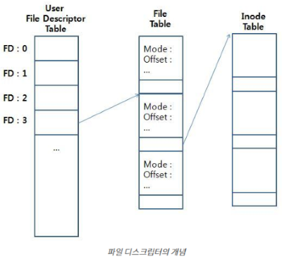
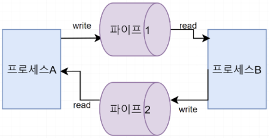

- 프로세스와 프로세스간 데이터를 주고받을 수 있는 기술
한마디로 로컬에서 작동하는 Rest API, 소켓 통신 이라고 볼 수 있다
사용하는 이유
- 로컬에서도 어차피 Rest API 로 통신해도 되지만 태생이 웹 통신이라 비효율 적인 요소가 많다 (오버해드 문제)
- 보통에 로컬 통신에 작동하는
API(윈도우 API같은)는 해당 API 개발 언어에 맞춰 프로그램을 작성 해야 하는 문제가 있다.
종류
- 명명된 파이프 (Named Pipe)
- 특수 정의된 파일을 이용한 통신 방식
- 공유 메모리
- 프로세스 간 메모리 영역을 공유하는 방식
- 가장 빠르지만 구현이 어렵고 각 언어별 최적화가 뒤죽박죽
- 그리고 요청/응답 구조 처리를 할 수 없음
- 메시지 큐
- 소켓
- 일반적인 TCP 소켓 통신 또는 UDS 통신
- RPC
- Process Creation | Child Process
- 메인 프로그램에서 하위 프로그램을 실행하여 부모-자식 프로세스간 통신
가장 쓸만 한건
소켓이랑Named PIPE인듯
사용 예
- DBMS 에서
서버PC와DB 엔진간 통신 웹서버와WAS와의 통신마이크로서비스 아키텍처:- 모든 서버와 서버를 독립적으로 배포하는 구조
- 근데 이제 하나의 PC에서 실행 하는걸 곁들인
개념
File Descriptor
참고자료

- 프로세스가 파일을 open 하면 부여받는
0이 아닌 정수값- 프로세스에서 열린 파일의 목록을 관리하는 테이블의 인덱스
기본 할당 File Descriptor:-
0: STDIN_FILENO = 표준 입력
-
1: STDIN_FILENO = 표준 출력
-
2: STDIN_FILENO = 표준 애러
즉 뭔 소리냐 콘솔에 입/출력을 할 수 있는게 이 File Descripor 가 담당하기 때문인 것이다
-
- File Descriptor 의 Index는 OS 가 관리한다
- File Table 은 각각의 프로세스가 관리하게 된다.
- File Descriptor Index 는 프로세스에서 동일하지만, 거기에 연결되는 Table 은 달라서 같은 File Descriptor Index 라도 다르게 작동하는 것이다
Unix domain socket (UDS)
유닉스, 리눅스 계열 운영체제 사용가능
- IPC 통신 소켓
- 서버, 클라이언트 형태로 구성되며 해당 언어가 UDS 통신 지원하면 뭘로 구성하든 상관 X
- 일반 네트워크 소켓을 사용해도 구현 가능하나 네트워크 스택, 경로 결정 과정 등을 패스 즉 최적화가 좋음
작동방식
- 기본적인 사용법은 네트워크 소켓과 비슷
- TCP 소켓에 경우 IP 를 이용하여 통신하지만 UDS에 경우 특수 파일 하나를 만들고 그 파일에 접근 하는 프로세스끼리 연결 시켜서 하는 통신
- 서버 생성시
.sock같은 파일로 커넥션이 이루어지기 때문에 만일 통신이 종료된 이후 해당 파일을 지우지 않으면 오류걸림
파이프 통신(Pipe)
IPC 통신에서 가장 기초적으로 쓰이는 단방향 통신

- 한 프로세스의 Output 이 다른쪽에 Input 으로 쓰이거나 그 반대로 쓰는
- 양방향 통신을 하려면 위 사진처럼 파이프를 2개 생성해야함
익명 파이프 (Anonymous Pipe)
일반적인 파이프
- 통신할 프로세스가 명확해서 이름이 필요 없는 경우에 사용하는
- 주로 아래 나오는 프로세스 생성 (Process Creation) 같은 부모-자식 간 통신에 쓰인다
망명된 파이프 (Named Pipe)
윈도우 및 여러 운영체제 사용가능
- 커널 에서 특수 정의된 파일을 이용한 통신 방식
- 파일 입출력에 로우레벨에서 작동되는 것 (File Descriptor)
- 연결을 파일 시스템에서 관리된다
- 이름이 있기 떄문에 전혀 관계 없는 프로세스끼리의 통신도 가능하다
작동방식
-
UDS와 통신 방식은 유사하다. 서버가 특정 파일을 만들고 클라이언트가 해당 파일에 접근하면 커넥션이 이루어지고 실제 통신은 메모리를 통해 통신하게 된다.
-
서버:Named Pipe생성- 클라이언트 연결 대기
- 데이터 전송 및 수신
- 파이프 닫기
-
클라이언트:Named Pipe에 연결- 데이터 전송 및 수신
- 파이프 닫기
-
이때 File Descriptor 가 사용되는데
- 서버쪽에서 할당한 파일을 역 추적해서 해당 파일을 사용하고 있는 프로세스 찾고
- 있으면 해당 프로세스와 연결 해주는 식
프로세스 생성 (Process Creation)
다른 말로 자식 프로세스 (Child Process) 라고도 함
- 상위 프로그램에서 다른 외부 프로그램을 실행하여 해당 프로그램과 통신하는
File Descriptor와파이프 통신에 기초한다
작동원리
- 기본적으로 실행하는 프로그램은
열린파일로 간주된다 즉 File Descriptor 가 할당 된다는 소리
File Descriptor 상속
- 메인 프로세스는 파이프를 열고
- 서브 프로세스의 나의 File Descriptor를 상속시킨다
- 즉 서브 프로세스가 나의 File Table을 참조할 수 있게 끔 해서 입/출력이 메인 프로세스에서 가능하도록 설계한다
I/O 통신
- 메인 프로그램이 서브 프로세스에 데이터를 전달하려면, 파이프의 쓰기 디스크립터에 데이터를 쓰고
- 서브 프로세스는 해당 파이프의 읽기 디스크립터를 통해 읽고